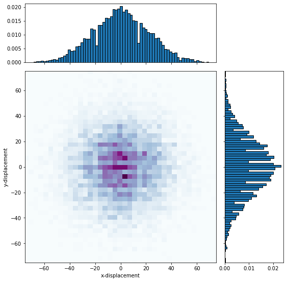

In biophysics, we studied random walks and diffusion. We can calculate the probability of getting a particle at position n by the binomial distribution. These topics remind me, how to calculate probability of random work numerically? 1D? 2D? or even 3D? And what are applications of it? After some research, I find out a popular method called Monte Carlo method[1] which has been used in many areas such as biology, statistic, and engineering. In this report, I will discuss the overall study plan for this method and perform python simulation for the random walk. Then, I will investigate applications of Monte Carlo random walk simulation.
A random walk is a random process that shows how a particle can move in some space. In biophysics, many stochastic data can be involved in a single system. How should we analyze a large amount of information computationally? This report will introduce the Monte Carlo method, a stochastic model that is useful to study random walks. The Monte Carlo method is a powerful numerical random sampling method that uses randomness to solve problems with many degrees of freedom in a system. To understand the science behind it, this method requires some understanding of the random walk model and study of Monte Carlo simulation to implement it numerically, then study particle Brownian motion, extend the Monte Carlo algorithm class to simulate the process. After all the studies, I will be able to use the Monte Carlo technique to visualize the random walk process and use the extended algorithm to simulate the complex problem. We know that a 1-D random walk follows the binomial distribution
\[P(n_{i};n) = { Wp^nq^{n-n_{i}} }.\]
where W is the combination of $$nCn_{i} = \frac{n!}{n_{i}!\left(n-n_{i}\right)!}$$
p is the probability of moving right, and q is the probability of driving left. If it is a fair walk, the probability of each steps are equal. The probability distribution should follow the normal distribution if it is a fair walk. In this way, assume there is a particle that can only move left or right randomly at each step. Without binomial distribution, how should we find the probability of the particle at a position after several steps? The Monte Carlo method provides an idea about extensive sampling. We know the chance of moving left or right is 0.5, we can set up a large number random steps walk simulation, which simulates multiple times of random particle walk, we record the final position each time. The probability of particle at x is the number of trails at x divides the total number of trails. Even though we don't know the distribution, this method can still find the approximate probability. Why should we consider the situation without distribution? Many particles under quantum mechanic situation won't show proper distribution with wave-particle duality, such as Boson sampling, particles can be in different quantum states. Normally, we know the probability distribution first, so we can calculate the chance, the Monte Carlo method reverses the process, we know the probability from big samples, then we can predict the distribution.
First, by setting up a 1-D fair random walk process, run the process for N=1000 times with a step size of 1000. Then plot the data in a histogram. See Fig. 1. We can see that the bell shape pattern follows the discrete binomial distribution. The mean is approaching zero, and the variance is around N. When N gets large, we can find the pattern follows the binomial distribution. With central limit theorem, the data will follow normal distribution. The result has a mean value of -0.344 and standard deviation of 33.25. These numbers will change everytime (of course it is a random process).
Second, with the idea of a 1-D random walk, I extend the simulation to 2-D, which implement by setting a function with 0.25 chance to go up, down, left, or right in 2-D space. We can see from Fig. 2, all data points diffuse from the center, the density in the middle is the highest, which shows both x and y displacement have mean values of zero.  In this case, both x and y displacements follow binomial distribution. In general, the mean and variance of a step size random walk(every step is a units), with probability q of moving left will be[2]
$$<x>= \sum_{i=1}^{N}<x_{i}> = N\left(aq-a(1-q)\right) = aN\left(2q-1\right)$$
$$\sigma ^2 = <x^2> - <x>^2 = N\left(a^2q+a^2\left(1-q\right)-<x>^2\right) = 4a^2Nq\left(1-q\right)$$
with central limit theorem, when N gets large, the data will approach Gaussian distribution(in all dimensions).
Now we understand the basic concept of stochastic simulation. It is time to do use it for a real-world problem, such as Brownian motion, discovered by Robert Brown in 1827, who studied pollen movement in the water. Brownian motion is the random motion of particle in a medium. For example, in water, the particle may get hit by the water molecules in all directions and move randomly (Animated example[3]). The probability of the Brownian motion step depends only on the current particle state and is not affected by the past. This process is defined as Markov Chain[4].
A famous algorithm in random sampling is called the Metropolis-Hastings algorithm. It is one of the Markov Chain Monte Carlo method for obtaining a sequence of random samples from a probability model when direct sampling is difficult. The algorithm has the follow steps: First, we pick a initial state, such as my choice (x = 0, y = 0) in Brownian motion. Next, we know that random walk will approach normal distribution as sample size increases, so we can choice two random numbers (α, β) from normal distribution and add it to the initial state (x′ = x + α, y′ = y + β). Then we calculate the acceptance ratio, which is the probability to accept the proposed state x′ and y′. The common choice for it is the Metropolis choice[5]
$$A(x',x_{t}) = min(1,\frac{P(x')}{P(x_{t})}\frac{norm(x_{t}|x')}{norm(x'|x_{t})})$$
where A is the acceptance ratio between x′ and xt state, P is the distribution model(2-D random walk model) and norm is normal distribution. We chose the minimal value between 1 and the ratio. After that, we pick a random number c between 0 and 1 from uniform distribution and compare it with our acceptance ratio. If A ≥ c, we accept the move. Otherwise, we reject the move[6]. It is hard to show all details and proof in this report. More details at information[4].
For 2-D Brownian motion, the model we use will be similar to a 2-D random walk. We only need to know the probability distribution so that we will set up the function with only one step, each step the particle has a 0.25 chance to go up, down, left, or right, the final output is a 2-D array which store the final position (x, y). Then, set the initial state at (0, 0) and 5000 Metropolis steps, for each step the algorithm checks the acceptance of x and y, if the step is accepted, the particle will move to the new position. This situation is all randomized, the current position is independent from other steps, which is what happening when a particle is in a medium. See Fig. 3. This simulation is very useful in biology. Many protein-based molecular motors may also be Brownian motors. Brownian motors are molecular machines that use chemical reactions to move in space, such as ATP synthase and myosin II[7]. Moreover, many nanotechnologies require Brownian motion as the primary control factor, for example, a nanobot. Imaging a nanobot that can check over the whole body of a human, it needs energy to move, but in nano-size, it is hard to design energy storage in the robot, so the nanobot is designed to take bias Brownian motion(design the nanobot to take step/move unequally) to get in the correct direction[8].
{kind=link}